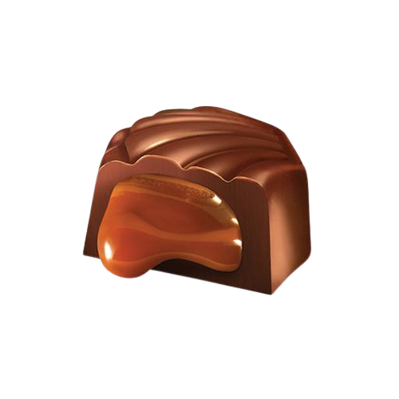

Quienes somos:
Somos Bombonería Firenze, representantes de la firma Estancia El Rosario. Contamos con más de 30 años de experiencia en el rubro, comercializando comestibles de la mejor calidad. Además, vendemos café molido en el acto. Cuidamos cada detalle de la presentación de nuestros productos, para mantener la calidad que siempre nos ha caracterizado. Nos destacamos entre las bombonerías de Quilmes por ofrecer atención personalizada, pues es de esta manera, que conocemos los gustos de nuestros clientes y les ofrecemos productos que cumplan con sus expectativas. En Bombonería Firenze ponemos a su disposición lo mejor en:
- Bombonería
- Chocolates
- Confituras
- Bebidas
- Regalos empresariales
- Regalos personalizados
El secreto de Firenze:

Tenemos artesanos que elaboran los envases, todos diferentes; hacemos cintas y moños en el local,
Tenemos colaboradoras en el mostrador expertas, lo que hace que cualquier regalo que te lleves de Firenze te hace quedar súper bien.
Los chocolates son artesanales, y por otra parte somos representantes exclusivos de varias firmas del interior del país, como Córdoba, Santa Fe, en alfajores, dulces, licores, cosas que no se van a encontrar en otro lado más que en Firenze.
También funciona muy bien la venta de café Fundador molido en el acto, porque es un café Premium, firma a la que representamos desde que abrimos el local.
Los artículos son de primerísima calidad, y tenemos mucho cuidado en lo que le ofrecemos al cliente, porque es fiel, siempre vuelve; pasan los años y la gente vuelve, porque en Firenze hay honestidad, calidad y precio.